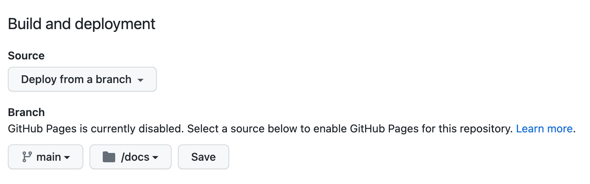

简单记录一下，如何在 Github 上部署 Quarto 的静态网页。
确保 Github 和本机电脑已关联
如果从未在电脑上使用过 Github，需首先将 Github 账号和本机电脑关联，具体方法是用终端创建 SSH 文件，并将公钥上传到 Github 配置页。具体步骤如下：
确认本机是否已创建 SSH Key
使用 ls -a ~ 在终端查看本机主目录页是否有 .ssh 目录。若没有，则使用 ssh-keygen -t rsa -C 'myemail@github.com' 创建 ssh 目录，并生成私钥文件 id_rsa 和 公钥文件 id_rsa.pub。
之后使用 cat /.ssh/id_rsa.pub 查看公钥并复制。
将公钥上传到 Github 配置页
打开 Github，进入 Settings - SSH and GPG keys 页面（或者直接输入 https://github.com/settings/keys网址），点击 New SSH key，将之前复制的公钥粘贴进去。
在本地配置 Quarto 项目文件夹
配置 Quarto 项目文件夹
在 _quarto.yml 文件中写入 output-dir: docs，渲染后会生成 docs 目录，里面就是将要部署的静态网页。
```{yaml}
project:
type: website
output-dir: docs
```在主目录下使用 touch .nojekyll 新建 .nojekyll 的空文件，告诉 Github 在部署网页时，不要用默认的 Jekyll 处理和渲染网页。
Quarto 的 Git 初始化
在 Quarto 项目主目录下，使用 git init 进行 Git 初始化。
新建 .gitignore 文件，在文件中写入 *.csv 和 *.xlsx，表示忽略数据源文件；再写入 _site/ 忽略本地调试时生成的文件。
在 Github 新建项目，并关联本地库和远程库
在 Github 新建项目
在 Github 上新建名为 QuartoBlog 的项目，得到项目的 git 地址 git@github.com:whuhzx/QuartoBlog.git
关联本地库和远程库
使用下列命令关联本地库和远程库，并将本地博客内容推送到 Github 上：
```{git}
git remote add origin git@github.com:whuhzx/QuartoBlog.git
git branch -M main
git push -u origin main
```如果执行过程中返回 fatal: remote origin already exists. 的报错，则重新设置： git remote set-url origin git@github.com:whuhzx/QuartoBlog.git
在 Github 上配置 docs 文件夹
本地库和远程库关联成功后，在 Github 该项目的设置（Setting）页面，点击左侧 Page 按钮，将 Branch 下的文件夹改成 /docs，表示只渲染该文件夹下的文件。

到这里，已可以在 https://whuhzx.github.io/QuartoBlog 页面上看到内容，静态网站已部署成功。
更新博客内容
后续更新博客内容时，可使用下列 Git 常用命令：
1、使用 git add 文件名/目录名 将工作区修改内容添加到缓存区
2、使用 git status 查看工作区或缓存区状况
3、使用 git commit -m "文字说明" 将缓存区的内容做成一个新的版本，可以在每次写完一篇新的博文内容后做一个新版本
4、使用 git push -u origin main 将新版本推送到 Github 上